Designing a play-along companion app for a live television show
Шоу эфирт байх үед үзэгч гараа ч салгалгүй хамт тоглох апп. Брэнд чанга ирдэг, интерфейс түүний дор уншигдсаар байх ёстой байсан.
- Хамрах хүрээ
- UI ба визуал дизайн
- Үүрэг
- UI/UX дизайнер
- Захиалагч
- The Voice Mongolia
- Он
- 2025
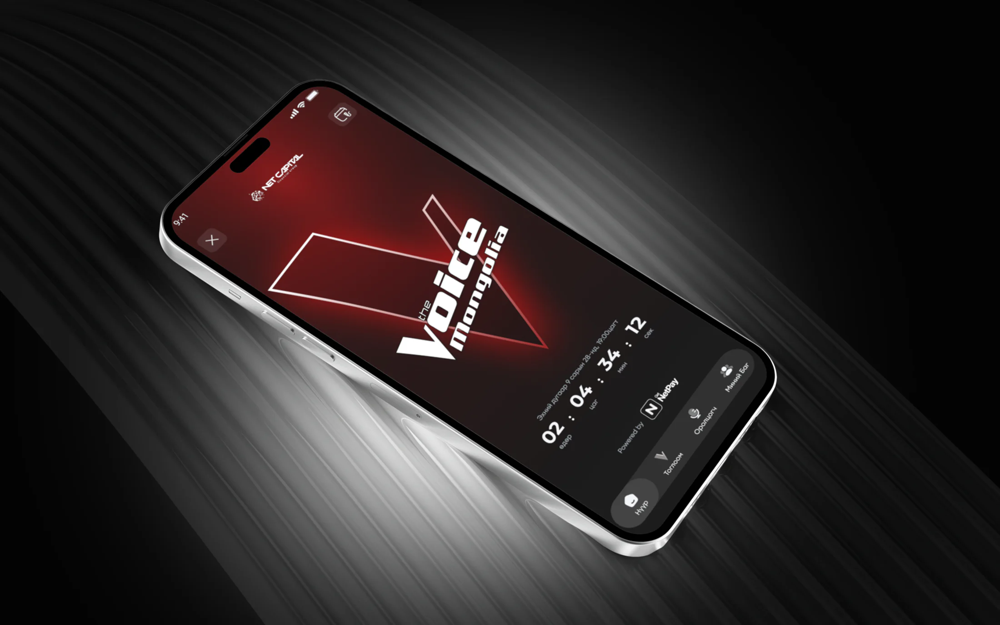
Context
Шоу эфирт байх үед апп юу хийх ёстой вэ: үзэх, санал өгөх, хамт тоглох. Хязгаарлалтыг эхэлж нэрлэсэн — брэнд чанга ирдэг, интерфейс түүний дор уншигдсаар байх ёстой.
Дараа нь одоо байгаа дэлгэцүүдийг нэвтрүүлэг тэднээс юу шаарддагтай нь тулган уншсан, мөн өөрчлөх үндэслэл.
Товчхон
- Эфирийн үеийн апп
- Шоу шууд явж байхад үзэгч санал өгч, тойргийн үр дүнг уншиж, тэмцээнийг дагадаг апп.
- Брэнд чанга, интерфейс тод
- Гүн улаан, хар, бүтэн дэлгэцийн гэрэл зураг — гэхдээ санал өгөх товч л алдаж боломгүй цорын ганц зүйл хэвээр.
- Дөрвөн товшилтоор санал
- Гурван зам тусдаа: эфирт санал өгөх, дууссаны дараа үр дүн, дугаар хооронд тэмцээнийг үзэх. Санал өгөх нь нүүрээс дөрвөн товшилт.
- Нийлүүлсэн, хэмжсэн
- 13 долоо хоногт 6 138 хүн нээж, 21 117 үйлдэл хийсэн — талаас илүү нь (52.8%) нүүрээс цааш, профайл, викторин, баг руу.
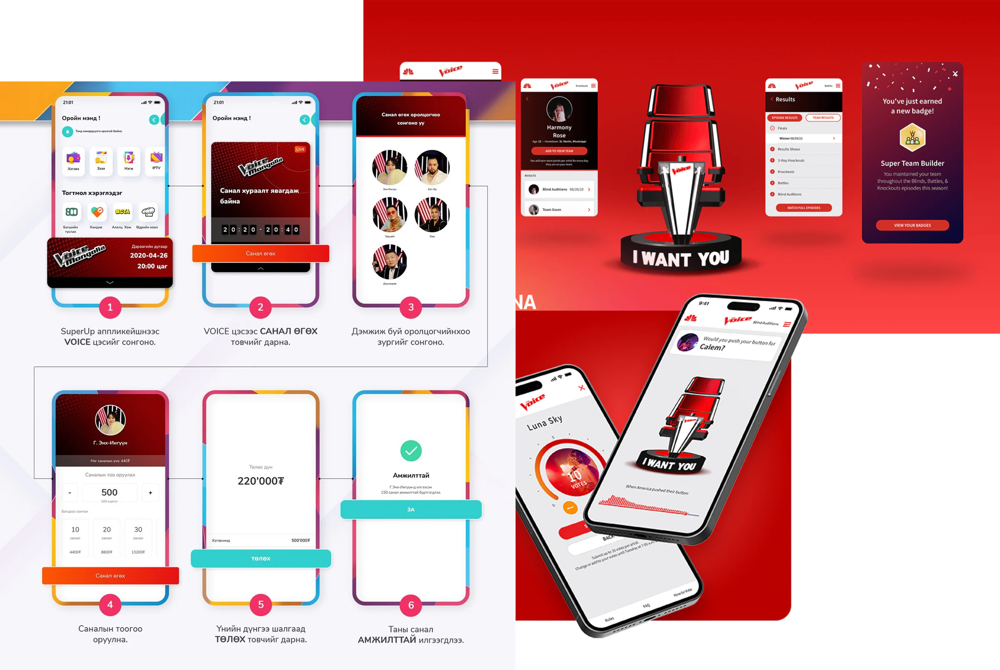
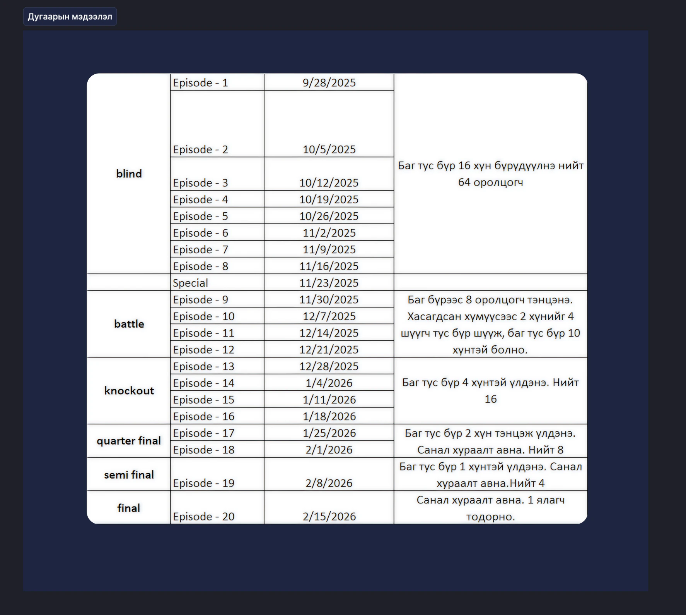
User flow
Гурван зам, өөр өөр мөчид ашиглагддаг тул тусад нь: тойрог эфирт байхад санал өгөх, дууссаны дараа үр дүнг унших, дугаар хооронд тэмцээнийг үзэх. Санал өгөх нь нүүр дэлгэцээс дөрвөн товшилт бөгөөд түүнээс хэзээ ч гардаггүй.
Low-fidelity
Санал өгөх замыг бүдүүвч нарийвчлалаар — нүүр урсгалаас баталгаажуулалт хүртэл таван дэлгэц, дээр нь тэдэнтэй ижил бүтэцтэй хоёр төлөв: Ultra Vote авсны дараах хуудас, тойрог шийдэгдсэний дараах сүлжээ.
Урсгалыг дагахын тулд хажуу тийш гүйлгэнэ үү →
High-fidelity
Нэвтрүүлгийн брэнд доорх эцсийн дэлгэцүүд — гүн улаан, хар, оролцогчийн гэрэл зураг бүтэн дэлгэцээр, харин санал өгөх товч л алдаж боломгүй цорын ганц зүйл хэвээр.
Шоу эфирт байхад санал өгөх
Дэлгэц бүхэлдээ нэг асуултад хариулна: хэнд, хэдэн санал үлдсэн бэ. Үлдэгдэл ба цаг тоологч сүлжээний дээр байрлах бөгөөд санал өгөх товч л дэлгэц дээрх цорын ганц дүүргэлттэй элемент.
Санал өгөх
Оролцогч дээр дарахад сүлжээнээс гаралгүйгээр доороос хуудас гарч ирнэ — ард нь нөгөө л царайнууд харагдсаар. Эхлээд үнэгүй санал, дараа нь арван саналтай Ultra Vote, эцэст нь баталгаажуулалт. Гурван сонголт, нэг дэлгэц — хаагдах гэж буй цонхны үеэр өөр тийш шилжих шаардлагагүй.
Тойрог, эхэндээ ба шийдэгдсэний дараа
Battle жагсаалт нэг тойргийг хоёр удаа харуулна. Хоёр дэлгэцийн хооронд юу ч байраа солихгүй — ялалтын тэмдэг нэмэгдэж, steal ба save тус тусын тэмдэгтэй болж, хасагдсан нь бүдгэрнэ. Үзэгч үр дүнг аль хэдийн сурсан газраасаа уншина.
Knockouts, мөн адил
Нэг сүлжээнд арван хоёр нэр, тус бүр дасгалжуулагчийнхаа өнгөн дор. Үр дүнгийн төлөв зөвхөн тэмдгүүдийг өөрчилдөг тул тойрог өөрөөрөө танигдсаар үлдэнэ.
Баг бүрдэж буй нь
Нэг л дасгалжуулагчийн хуудас — Blind audition эхлэхээс өмнө ба дөрвөн оролцогч сонгогдсоны дараа: 0/16, дараа нь 4/16. Хоосон суудлуудыг нуухын оронд зурсан тул улирлын дүр төрх эхний дугаараас харагдаж, шинэ уран бүтээлч бүр үзэгчийн аль хэдийн харсан газарт ирж суудаг.
Нэг баганад бүтэн зам
Уран бүтээлчийн хийсэн тоглолт бүр: тойрог, дуу, мөн тэр тойргийг давсан эсэх — давсан, steal, save. Багийн өнгө нь тэднийг Battle мөрөөс энэ хуудас хүртэл дагана. Хасагдсан ч хуудас бүх түүхийг хэлсээр байна.
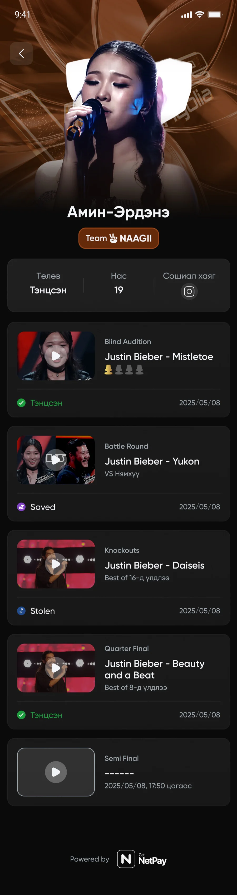
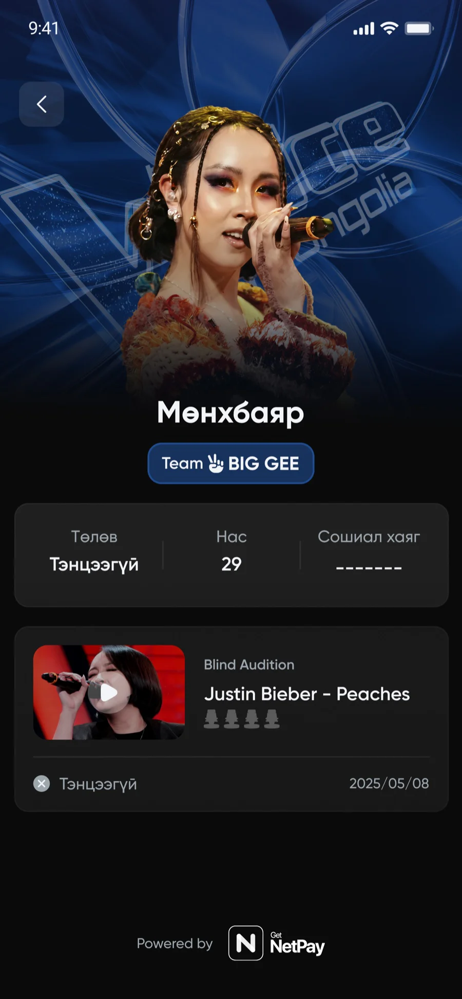
Design system
Дэлгэцүүдийг бүтээсэн компонентууд. Багийн дөрвөн өнгө нь түүний нуруу — дасгалжуулагч бүр өөрийн градиент, чип, картыг эзэмшдэг бөгөөд тэр хослол дуучныг тулааны мөрөөс хасагдалтын хавтан, өөрийнх нь профайл хүртэл дагадаг. Бусад бүхэн доор нь чимээгүй суухаар бүтээгдсэн: хоосон карт, сандлын төлөв, навигацийн дүрс, тоглолтын мөр.
14 харуулав · багийн өнгө, карт, сандал, дүрс тэмдэг, санал өгөх төлвүүд
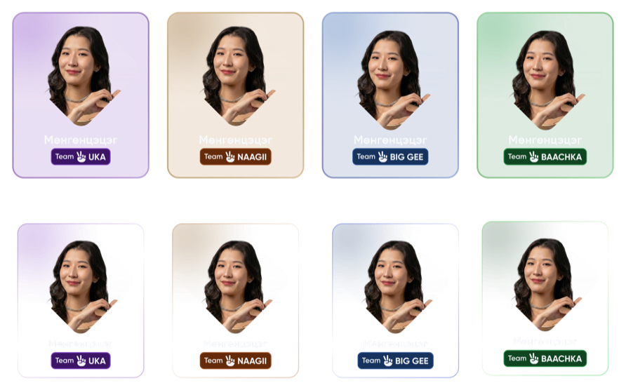

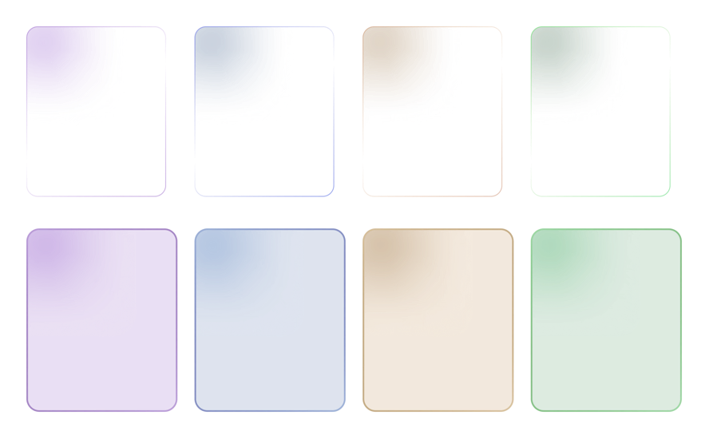
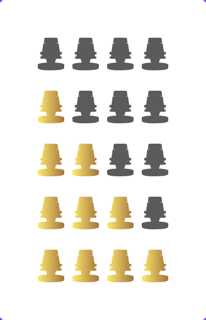
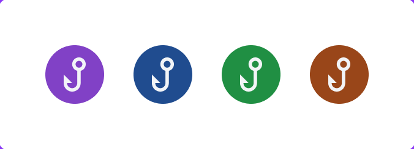
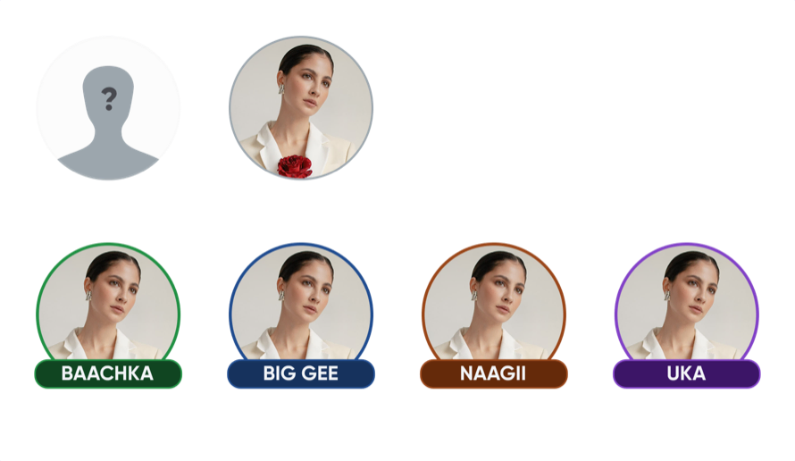
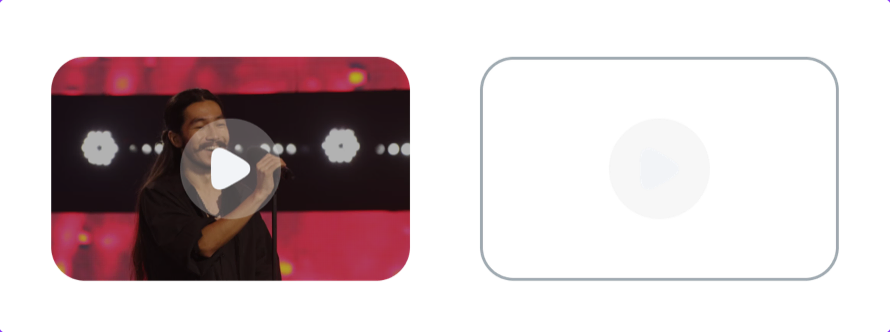
Outcome
Хүмүүс аппын дотор юу хийсэн бэ. Улирал дууссаны дараа уншсан арван гурван долоо хоногийн лог — хэдэн хүн нээсэн, хэдэн үйлдэл хийсэн, тэр үйлдэл хаана буусан.
Цөөн хүн олсон ч олсон хүмүүс нь дотогш орсон.
6 138
хүн нээсэн
NetPay-ийн идэвхтэй хэрэглэгчийн 3.1%, 13 долоо хоногт
3.4
үйлдэл, нэг хүнд
Нийт 21 117 үйлдэл
52.8%
нь нүүрээс цааш
Профайл 29.0%, викторин 16.0%, баг 7.8%
≈25
хариулт, тоглогч бүр долоо хоногт
Викторин, тусдаа лог: 955 тоглогч
7 хоног тутмын хэрэглэгч, нэвтрүүлгийн тойргоор
| Хэсэг | Үйлдэл | Хувь |
|---|---|---|
| The Voice нүүр | 9 967 | 47.2% |
| Оролцогчийн профайл | 6 132 | 29.0% |
| Викторин | 3 381 | 16.0% |
| Миний баг | 1 637 | 7.8% |
| Нийт | 21 117 | 100% |
6 138 хүн нээсэн, давхардаагүй — нэг хүнд 3.4 үйлдэл. Оргил 7 хоног 2026‑01‑19: 1 315 хүн, 4 032 үйлдэл.
| 7 хоног | Хүн | Үйлдэл | Нүүр | Профайл | Викторин | Миний баг |
|---|---|---|---|---|---|---|
| 2025-12-01 | 618 | 1 871 | 855 | 427 | 454 | 135 |
| 2025-12-08 | 746 | 2 659 | 1 135 | 525 | 791 | 208 |
| 2025-12-15 | 649 | 2 362 | 1 045 | 485 | 660 | 172 |
| 2025-12-22 | 627 | 2 464 | 1 137 | 919 | 215 | 193 |
| 2025-12-29 | 604 | 1 696 | 937 | 494 | 156 | 109 |
| 2026-01-05 | 808 | 2 030 | 1 261 | 478 | 156 | 135 |
| 2026-01-12 | 720 | 1 858 | 1 128 | 483 | 132 | 115 |
| 2026-01-19 | 1 315 | 4 032 | 2 033 | 1 156 | 469 | 374 |
| 2026-01-26 | 181 | 532 | 42 | 326 | 102 | 62 |
| 2026-02-02 | 174 | 520 | 58 | 294 | 111 | 57 |
| 2026-02-09 | 226 | 955 | 248 | 515 | 125 | 67 |
| 2026-02-16 | 57 | 96 | 59 | 22 | 9 | 6 |
| 2026-02-23 | 30 | 42 | 29 | 8 | 1 | 4 |
| Нийт | 6 138 | 21 117 | 9 967 | 6 132 | 3 381 | 1 637 |
Хүний нийт 6 138 нь давхардаагүй: нэг хүн хэд хэдэн долоо хоногт орсон тул долоо хоногуудыг нэмбэл 6 755 болно.
| 7 хоног | Тоглогч | Хариулт | Хариулт / хүн | Зөв |
|---|---|---|---|---|
| 2025-10-27 | 188 | 4 733 | 25.2 | 54.1% |
| 2025-11-03 | 250 | 6 087 | 24.3 | 51.0% |
| 2025-11-10 | 227 | 5 435 | 23.9 | 53.5% |
| 2025-11-17 | 195 | 4 950 | 25.4 | 53.4% |
| 2025-11-24 | 223 | 5 564 | 25.0 | 53.6% |
| 2025-12-01 | 178 | 4 367 | 24.5 | 52.9% |
| 2025-12-08 | 168 | 4 429 | 26.4 | 52.4% |
| 2025-12-15 | 145 | 3 612 | 24.9 | 55.5% |
| Нийт | 955 | 39 177 | 41.0 | 53.2% |
Өөр эх сурвалж, өөр хугацаа: дээрх 13 долоо хоногийн тоотой нэмж, нэг юүлүүр болгож уншихгүй. Нийтийн 955 нь давхардаагүй тоглогч; нийт хариулт / хүн нь найман долоо хоногийн дүн.
Үзэхээс цааш орсон. Үйлдлийн талаас илүү нь оролцогчийн профайл, викторин, багаа бүрдүүлэх дээр буусан — өөрөөр хэлбэл хүмүүс нүүр хуудсыг нээгээд гараад явчихаагүй, дотогш орсон. Нээсэн хүн тутамд дунджаар 3.4 үйлдэл ногдоно.
Тоглосон хүмүүс тоглосоор байсан. Викторины тусдаа лог дээр (2025‑10‑27 — 2025‑12‑21, найман долоо хоног) 955 хүн 39 177 хариулт бичсэн. Долоо хоног тутмын тоглогчийн тоо оргил 250-аас сүүлийн долоо хоногт 145 болж цөөрсөн ч тоглосон хүн бүр долоо хоногт 24–26 асуултад хариулж, зөв хариулт 51–56% хооронд тогтвортой байсан — цөөрсөн нь хүний тоо, оролцооны гүн биш.
Нэвтрүүлгийн хэмнэлээр хөдөлсөн. Оргил долоо хоног нь 2026‑01‑19, тухайн хэсэгт 1 315 хүн, 4 032 үйлдэл. Дөрвөн хоногийн дараа, 1-р сарын 23-нд, 5.0.7 хувилбараар санал өгөх боломж нээгдсэн — үзэгчид апп биш, шоу тэдэнд шийдэх зүйл өгсөн мөчид ирсэн.
Эх сурвалж: voice_mongolia.voice_activity_log,
13 долоо хоног, 2025‑12‑01 — 2026‑02‑23;
викторин quiz_cust_answer × quiz_week_info.